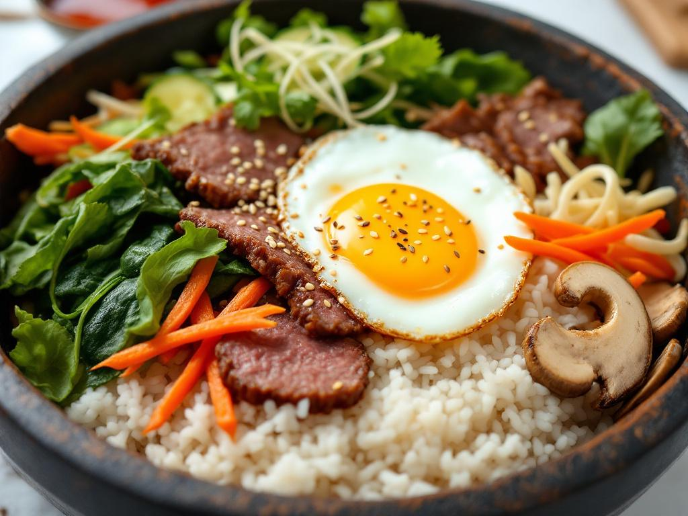
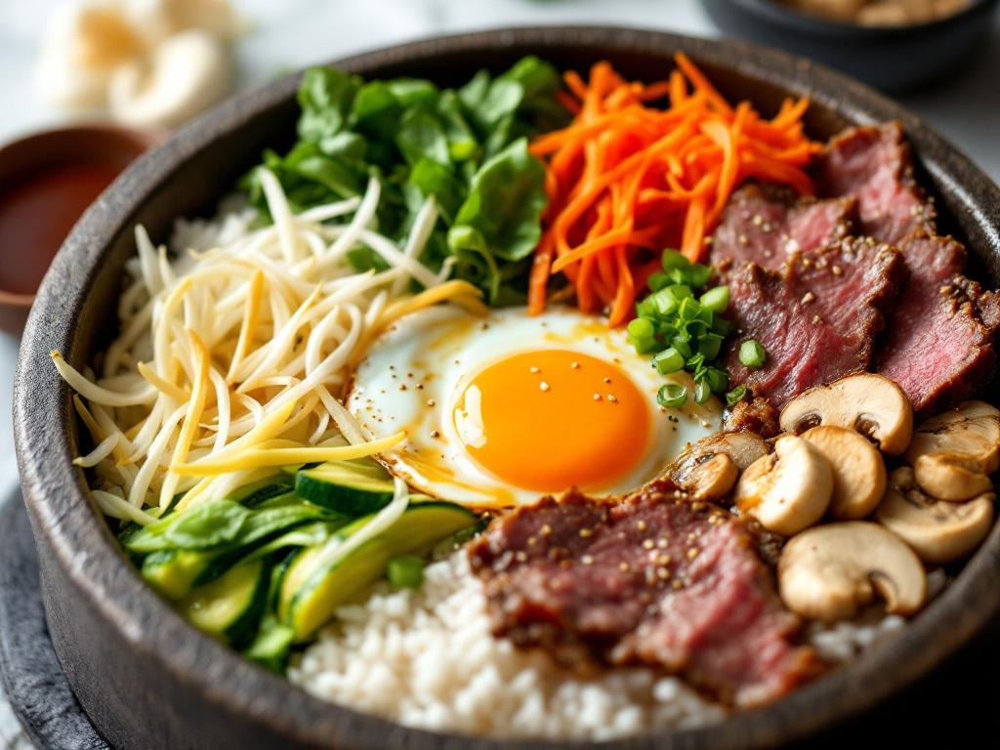

Home
Bibimbap

🌟 Bibimbap : Le Plat Coréen Ultime ! 🌟
Le bibimbap (비빔밥) est un chef-d’œuvre coloré et équilibré qui marie saveurs,
textures et tradition dans un seul bol. 🍚✨ Découvrez pourquoi ce plat est un incontournable de la cuisine
coréenne !
🍽️ Une Assiette Arc-en-Ciel
Le bibimbap repose sur une base de riz blanc moelleux, surmonté d’une variété d’ingrédients
soigneusement
préparés :
- 🍚 Base moelleuse : Du riz blanc cuit à la perfection,
souvent servi
dans un bol en
pierre chaud (dolsot) pour un effet croustillant.
- 🥩🍗 Protéines savoureuses : Des lamelles de bœuf
marinées (ou poulet,
porc, tofu pour
les végétariens), tendres et pleines de saveur.
- 🥬🥕 Légumes croquants : Un mélange de carottes râpées,
épinards, germes de soja,
champignons shiitake et courgettes, sautés ou blanchis pour garder leur croquant.
- 🍳 Œuf parfait : Un œuf au plat avec un jaune
coulant, posé
délicatement au centre.
- 🌶️ Sauce signature : La gochujang, une pâte de piment
fermentée, mélangée à de l’ail,
du vinaigre et de
l’huile de sésame pour un équilibre sucré-épicé.
- 🎨 Garnitures croquantes : Graines de sésame toastées,
algues séchées (gim), et un filet d’
huile de sésame
pour sublimer le tout.
🔥 L’Expérience Bibimbap
- 🥢 Mélangez tous les ingrédients dans le bol pour créer une harmonie de saveurs.
- 🌿 Croquez dans les légumes frais et les protéines fondantes.
- 😋 Savourez chaque bouchée, entre le doux du riz, le piquant de la
sauce et le croquant des
graines de
sésame.
💡 Pourquoi on adore ?
- ✅ Équilibré : Riche en légumes, protéines et glucides sains.
- ✅ Personnalisable : Adapté à tous les régimes (végétarien, sans gluten, etc.).
- ✅ Instagrammable : Une explosion de couleurs vives qui donne envie de
partager ! 📸
🍜 Variantes à Essayer
- 🌱 Bibimbap végétarien : Avec du tofu mariné et des légumes de saison.
- 🦐 Bibimbap aux fruits de mer : Crevettes ou calamars pour une touche marine.
- 🏆 Jeonju bibimbap : La version royale, avec des ingrédients supplémentaires comme des
œufs de caille.

📝 Ingrédients pour le Bibimbap (2 personnes)
🍚 Base
- 300 g de riz blanc (type riz à sushi ou coréen)
- 2 œufs frais 🥚
🥩 Protéines (au choix)
200 g de bœuf (filet ou rumsteck) en fines lamelles
Marinade :
- 1 c. à soupe de sauce soja 🫙
- 1 c. à café de sucre (ou mirin)
- 1 c. à café d’huile de sésame 🌿
- 1 gousse d’ail hachée 🧄
- 1/2 c. à café de gingembre râpé 🫚
Alternatives : Poulet 🍗, porc 🥓, tofu 🧈 (pour une version végétarienne), ou fruits de mer 🦐.
🥬 Légumes (à varier)
- 100 g d’épinards frais 🍃
- 1 carotte moyenne, en julienne 🥕
- 100 g de germes de soja 🌱
- 4-5 champignons shiitake, émincés 🍄
- 1/2 courgette, en fines lamelles 🥒
- 1/2 poivron rouge, en julienne (optionnel) 🌶️
🧂 Garnitures et assaisonnements
- 2 c. à soupe d’huile de sésame 🌿
- 1 c. à soupe de graines de sésame toastées 🌟
- 1 feuille de gim (algue séchée), coupée en lanières (optionnel) 🌊
- Sel et poivre 🧂
🍶 Sauce Gochujang
- 2 c. à soupe de
gochujang
(pâte de piment coréenne) 🌶️
- 1 c. à soupe de
vinaigre de riz
🍚
- 1 c. à soupe de
sucre
(ou miel) 🍯
- 1 c. à café d’
huile de sésame
🌿
- 1 gousse d’
ail pressée
🧄
👩🍳👨🍳 Étapes de Préparation
1️⃣ Préparer le riz
- Rincez le riz à l’eau froide jusqu’à ce que l’eau soit claire.
- Cuisez-le selon les instructions du paquet (ou dans un cuiseur à riz). 🍚
2️⃣ Mariner la viande
- Dans un bol, mélangez les lamelles de bœuf avec la marinade (sauce soja, sucre, huile de
sésame, ail,
gingembre).
- Laissez reposer 15-20 min pour que les saveurs s’imprègnent. ⏳
3️⃣ Préparer les légumes
- Blanchir les épinards et les germes de soja dans de l’eau bouillante salée pendant 1-2 min,
puis les
rafraîchir dans de l’eau froide. Égouttez bien.
- Sauter les carottes, champignons, courgettes et poivrons à l’ail dans un peu d’huile de
sésame pendant 2-3
min chacun. 🥘
4️⃣ Cuire la viande et les œufs
- Faites cuire la viande marinée à feu vif dans une poêle pendant 2-3 min
jusqu’à ce qu’elle soit bien dorée.
- Préparez les œufs au plat avec un jaune encore coulant. 🍳
5️⃣ Préparer la sauce gochujang
- Mélangez tous les ingrédients de la sauce dans un bol : gochujang, vinaigre de riz, sucre,
huile de sésame
et ail. Ajustez le goût selon vos préférences. 🥣
6️⃣ Monter le bibimbap
- Répartissez le riz chaud dans deux bols (idéalement en pierre pour un effet croustillant).
- Disposez harmonieusement les légumes, la viande et l’œuf au plat sur le riz.
- Parsemez de graines de sésame et d’algues gim. 🌿
7️⃣ Dégustation !
Servez avec la sauce gochujang à part.
Mélangez tous les ingrédients dans le bol avant de déguster pour une explosion de saveurs !
🥢
💡 Conseils
- Pour un riz grillé croustillant, faites chauffer le bol en pierre vide avant d’ajouter le
riz.
- Vous pouvez préparer les légumes à l’avance et les conserver au frigo.
- Ajoutez du kimchi en accompagnement pour plus de piquant ! 🌶️